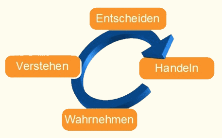

Hier finden Sie einen Auszug an Bereichen, in denen Sie Mentaltraining anwenden können:
- Beruf: Erlangen mentaler Stärke und Führungs-Kompetenz/ Erlernen von Techniken zur Stressreduktion Stärkung des eigenen Vertrauens im Bewerbungs-Prozess/ Erleichterung in Ihrer Entscheidungsfindung
- Ausbildung: Gelassenheit in Prüfungssituationen/ Fokussieren auf Ihren Erfolg
- Beziehung: Erkennen Ihrer Bedürfnisse und Blockaden in der Partnerschaft/ Kreation Ihres Wunschbildes eines passenden Partners/ Konflikte erkennen/ Erlernen mentaler Techniken zur Konfliktlösung
- Selbstvertrauen: Erlernen von mentalen Techniken zur Steigerung des Selbst-Bewusstseins/ Charisma-Training/ Erkennen von mentalen Fähigkeiten zur Gestaltung und persönlichen Weiterentwicklung
- körperlich und seelisches Wohlbefinden: Training von Visualsierungstechniken für das Training zur Wunschfigur/ Erlernen von Entspannungs-Techniken und Maßnahmen zur Stressprävention
- Sport: Erlernen von effektiven Tools für den Wettkampf/ Zielfokussierung/ mentalen Erfolgstechniken/ Erlernen von Aktivierungstechniken
- Kindermentaltraining
- Künstlermentaltraining
- oder haben Sie ein anderes, ganz persönliches Thema?
Sie finden hier auf meiner Website immer wieder neue Artikel - dabei möchte ich zeigen, wie vielseitig Mentaltraining anwendbar ist und belegbar die gewünschten Erfolge bringt.
Mentaltraining hat Ihr Interesse geweckt? Dann kontaktieren Sie mich noch heute für ein kostenloses Erstgespräch (Link zu Kontakt) - ich freue mich auf Sie!